linux用户管理
学习目标
1、掌握用户、用户组的概念
2、使用linux命令对用户、用户组管理
3、掌握网络信息查看
4、掌握远程连接linux方式
用户管理篇
Root用户登录系统后可以做很多事
- 写文档
- 听音乐
- 聊QQ
- 聊微信
- 写代码
- 上班五分钟，闲聊俩小时
- 打卡下班
- ...
当然了，完全可以坐在办公室，远程连接服务器工作。
多用户多任务
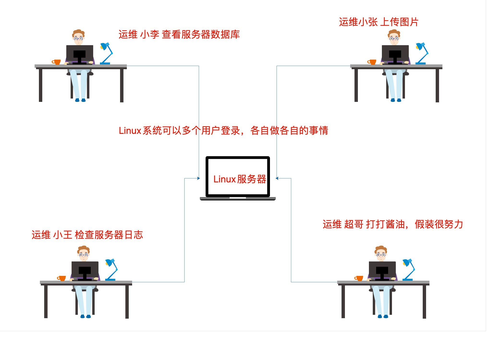
多个用户使用同一个操作系统，每个人做自己的事。
每个人都有自己的账号密码，权限也不一样，好比老板权限最大，员工权限较低
多用户大多都是远程登录去控制服务器
什么是用户管理
用户是什么
针对个人电脑
平时我们使用机器，都是自己使用，没有其他人公用，你有自己一个账号，和你自己的密码。
很少会创建多个用户，给别人使用。
windows：
用户就是你管理系统的一个账号。
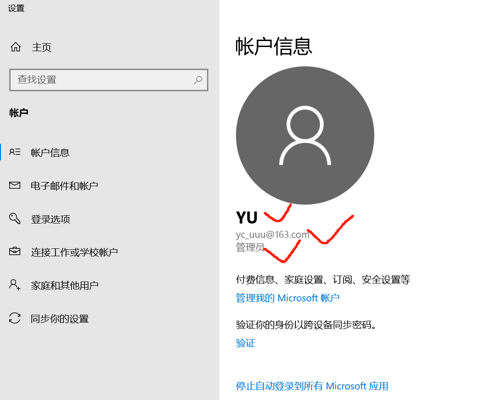
linux服务器
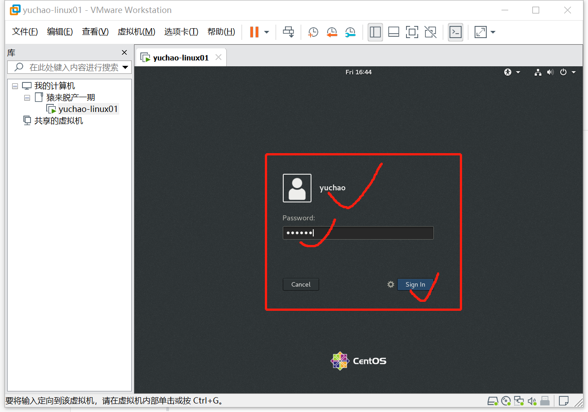
为什么要说用户管理？
linux系统是一个多任务、多用户的系统，你可以登录，我也可以登录，可以很多人一起登录，同时操作这台机器。
因此你作为运维，你是这个服务器的老大，你得保护你的服务器，不被别人祸害。（此时的你是管理员，你有root的密码）
你可以降低这个用户权限，你也可以直接删除这个用户，让他无法登录你的服务器。（管理员可以修改其他用户信息）
- 你可以修改其他用户的密码，让他直接密码错误，无法登录机器！（管理员就是这么牛）
linux也是一样，是你登录系统的一个账号，代表了你在该机器上的一个身份。
但是linux服务器在公司里是很多人一起在用的，服务器需要对多个用户设置不同的权限。
- 每个用户的权限都有不同，可访问，可操作的计算机资源也是有限的。
这样做的好处是？
- 加强系统安全性
- 帮助系统管理员对正在使用机器的用户进行追踪管理
Linux用户分类
Linux系统不同用户权限不一样，好比小张想用我的服务器，我为了保护隐私与资料安全，开通普通用户(useradd xiaozhang)，普通用户权限较低，随便他折腾了。
还有计算机程序默认创建的用户，如ftp，nobody等等
用户信息存放在/etc/passwd文件中
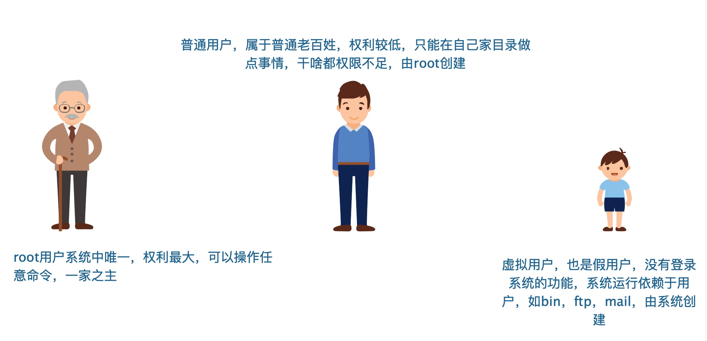
用户角色划分
- root
- 普通用户
- 虚拟用户
现代操作系统一般属于多用户的操作系统，也就是说，同一台机器可以为多个用户建立账户，一般这些用户都是为普通用户，这些普通用户能同时登录这台计算机，计算机对这些用户分配一定的资源。
普通用户在所分配到的资源内进行各自的操作，相互之间不受影响。
但是这些普通用户的权限是有限制的，且用户太多的话，管理就不便，从而引入root用户。
此用户是唯一的，且拥有系统的所有权限。
root用户所在的组称为root组。
“组”是具有相似权限的多个用户的集合。
图解用户、用户组
系统中的file.txt属于谁？
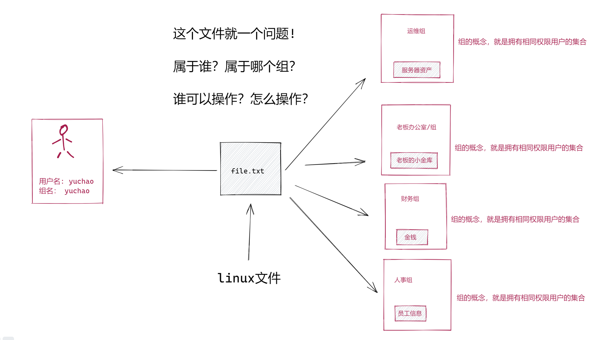
手机的主人是谁？
手机比喻的是系统上的file.txt文件概念。
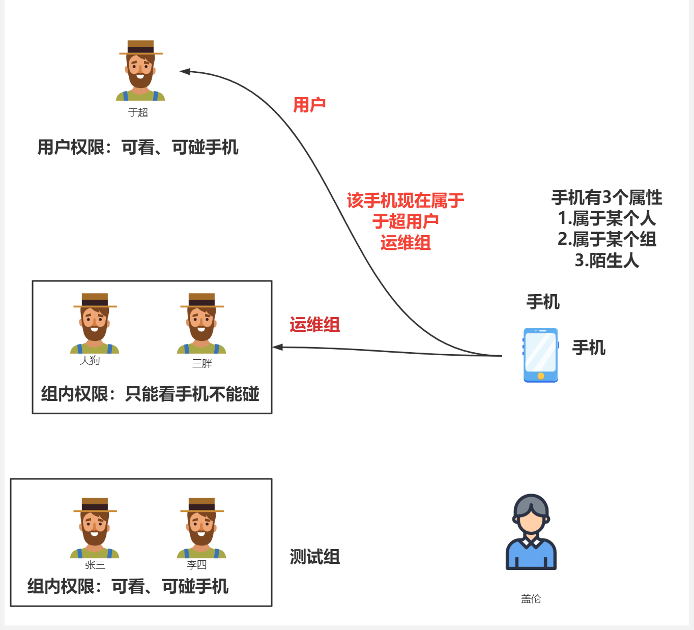
linux的用户、用户组
linux支持多用户、多任务
举例，在一个安全公司里
于超老师所在的运维团队有3个人，分别是
于超、狗蛋、三胖
于超负责代码部署、系统中的名字叫 yuchao
狗蛋负责数据库部署，系统中的名字叫 goudan
三胖负责监控，系统中的名字叫 sanpang
公司的网站在服务器上运行着，运维团队要检查网站的状况，此时他们是分工很明确的，三人同时登录了服务器
1、yuchao的权限只能操作网站代码、日志等
2、goudan的权限只能操作数据库，登录、查看日志
3、sanpang的权限只能查看监控程序的状态、日志
并且他们不能越权访问其他人的文件资料，提示权限不够。
什么是用户
无论是谁，想访问服务器，用这台机器，必须先申请个账号，运维负责创建，然后再登录。
用户创建时，会同步设置密码，如
yuchao
1234567
在使用账号登录后，会立即进入自己的用户家目录（权限控制的死死的，你比如你进入一家单位，你是不是老老实实在工位上待着，你能直接去老板屋里转悠吗？）
windows下的管理员
linux下管理员
Linux/unix是一个多用户、多任务的操作系统。
root：默认在Unix/linux操作系统中拥有最高的管理权限。可以理解为qq群的群主⬇️⬇️⬇️
普通用户
普通用户：是管理员或者具备管理权限的用户所创建的，只能读、看，不能增、删、改。
什么是用户组
为什么要有组，说白了就是便于管理，公司里那么多人，怎么管理？分部门管理，不同的部门权限不一样。
假设有一个公司中有多个部门，每个部门中又 有很多员工。
如果只想让员工访问本部门内的资源，则可以针对部门而非具体的员工来设 置权限。
例如，可以通过对技术部门设置权限，使得只有技术部门的员工可以访问公司的 数据库信息等。
linux的用户组
为了方便管理属于同一组的用户，Linux 系统中还引入了用户组的概念。通过使用用 户组号码(GID，Group IDentification)，我们可以把多个用户加入到同一个组中，从而方 便为组中的用户统一规划权限或指定任务。
对于linux而言，比如公司的开发部门，需要访问服务器上一个文件夹的资料，并且允许读取、允许修改写入，开发部门有30个人，你要给每一个人都添加读写权限吗？
那必然是给开发部门设置的权限就是，允许读写该文件夹，然后属于该部门的人员，就自然有了组内的权限，后续开发部门招新人，只要加入组内，权限也有了。
Linux管理员在创建用户时，将自动创建一个与其同名的用户组，这个用户组只有该用户一个人，
用户和组的关系
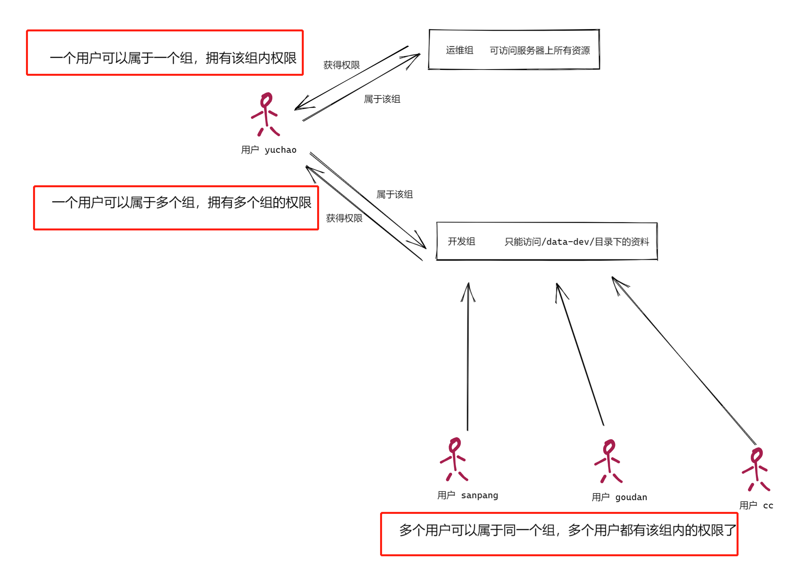
- 一对一，一个用户可以存在一个组里，组里就一个成员
- 一对多，一个用户呆在多个组里面
- 多对一，多个用户在一个组里，这些用户和组有相同的权限
- 多对多，多个用户存在多个组里
（重点）图解linux用户和文件权限
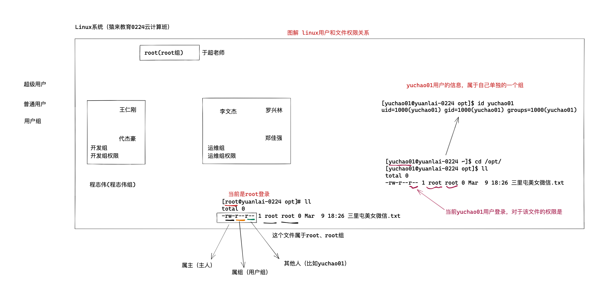
主组/附加组
什么是附加组
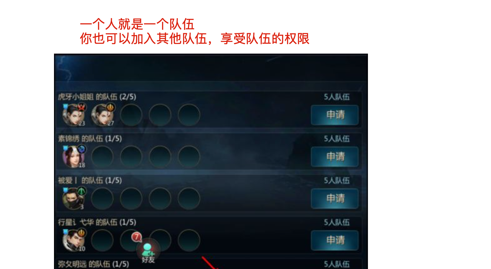
主组：linux用户创建时会自动创建一个同名的组，称之为主组，且主组只能有一个。.
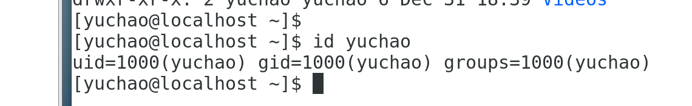
附加组：除了主组外，用户还可以加入到其他组，属于多个组，额外添加的组，就叫附加组，且可以获得附加组的权限。
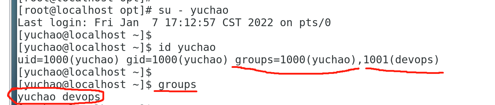
root的权利
Linux系统的特性就是可以满足多个用户，同时工作，因此Linux系统必须具备很好的安全性。
在安装RHEL7时设置的root管理员密码，这个root管理员就是所有UNIX系统中的超级用户，它拥有最高的系统所有权，能够管理系统的各项功能，如添加/删除用户，启动/关闭进程，开启/禁用硬件设备等等。
因此“能力越大，责任越大”，root权限必须很好的掌握，否则一个错误的命令可能会摧毁整个系统。
root为什么权利这么大？
root只是个名字而已，权利很大的原因，在于他的UID是0。
[root@yuanlai-0224 opt]# id
uid=0(root) gid=0(root) groups=0(root)
- UID，user Identify，好比身份证号
- GID，group Identify，好比户口本的家庭编号
- 在Linux系统中，用户也有自己的UID身份账号且唯一
- 在Linux中UID为0，就是超级用户，如要设置管理员用户，可以改UID为0（不推荐该操作）
- 建议普通用户用sudo提权。
- 系统用户UID为1~999 Linux安装的服务程序都会
创建独有的用户负责运行。 - 普通用户UID从1000开始：由管理员创建（centos7），最大值1000~60000范围
- centos6创建普通用户是500开始
如何管理linux的用户、组
日常我们对用户、组的操作包括：
- 用户创建、删除、修改
- 用户组创建、修改、删除
linux用户信息配置文件
/etc/passwd
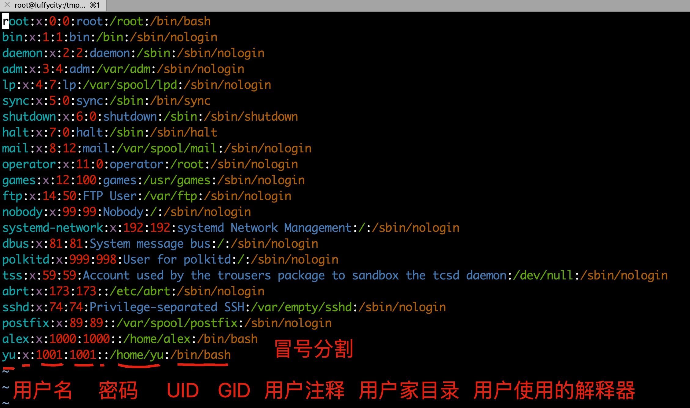
/etc/passwd字段信息解释
| 字段名 | 解释 |
|---|---|
| 用户名 | 对应UID，是用户登录系统的名字，系统中唯一不得重复 |
| 用户密码 | 存放在/etc/shadow文件中进行保护密码 |
| 用户UID | 用户ID号，由一个整数表示 |
| 用户组GID | 范围、最大值和UID一样，默认创建用户会创建用户组 |
| 用户说明 | 对此用户描述 |
| 用户家目录 | 用户登录后默认进去的家目录，一般是【/home/用户名】 |
| shell解释器 | 当前登录用户使用的解释器。centos/redhat系统中，默认的都是bash。若是禁止此用户登录机器，改为/sbin/nologin即可 |
其余用户、组相关配置文件
/etc/passwd 用户信息
/etc/shadow 用户密码信息
/etc/group 用户组信息
/etc/gshadow 用户组密码信息 ，在大公司，用户和组数量很大的情况下，需要制定复杂的权限管理，那时会用到组密码
/etc/skel
skel是skeleton的缩写，意为骨骼、框架。故此目录的作用是在建立新用户时，用于初始化用户根目录。系统会将此目录下的所有文件、目录都复制到新建用户的根目录，并且将用户属主与用户组调整为与此根目录相同。
密码文件的权限
#用户信息文件，权限是644，所有人可读，有一定安全隐患
[root@pylinux ~]# ll /etc/passwd
-rw-r--r-- 1 root root 1698 10月 13 2019 /etc/passwd
#用户密码文件，除了root用户，其他用户默认是没有任何权限，
[root@pylinux ~]# ll /etc/shadow
---------- 1 root root 892 10月 20 2019 /etc/shadow
#用户密码文件
[root@pylinux ~]# tail -5 /etc/shadow
mysql:!!:17980::::::
yu:$1$Kx9cz6sK$GE3jiHtjJikn9Ai4ECINn/:18031:0:99999:7:::
epmd:!!:18074::::::
rabbitmq:!!:18074::::::
py:!!:18182:0:99999:7:::
linux命令实践（实践篇）
命令列表
| 命令 | 作用 |
|---|---|
| useradd | 创建用户 |
| usermod | 修改用户信息 |
| userdel | 删除用户及配置文件 |
| passwd | 更改用户密码 |
| chpasswd | 批量更新用户密码 |
| chage | 修改用户密码属性 |
| id | 查看用户UID、GID、组信息 |
| su | 切换用户 |
| sudo | 用root身份执行命令 |
| visudo | 编辑sudoers配置文件 |
组管理
创建一个devops组
groupadd组添加
作用：添加新组
语法
group 参数 组名
-g 设置组id号，默认从1000开始,1~999是系统预留的组
实践
[root@localhost opt]# groupadd devops
超哥提醒：
执行后，不会有结果，就是正常的
大多数情况下，命令敲完了，没有提示，就是好结果
- 有提示，一般情况下表示可能出错了
（这规则仅针对小白，初学时可用。。成为老司机后，务必看懂linux的英文报错，以及知道自己在干什么）
检查组信息（附属组）
groupadd执行后，是将组信息，写入了文件，一个管理所有组信息的文件。
[root@yuanlai-0224 ~]# tail -5 /etc/group
yuchao01:x:1000:
zhiwei01:x:1001:
zhiwei001:x:1002:
fjh01:x:1003:
devops:x:1004:
如果你将yuchao用户，添加到devops这个组中，即可看到如下画面。
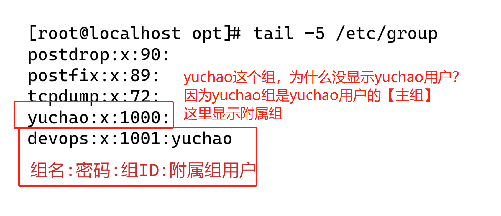
字段解释：
组名，就是groupadd指定的名字
密码，x就是一个占位符，没有密码，组可以设置密码，一般不用
组ID，默认从1000开始，依次+1
附属组：比如yuchao用户，又加入了devops组
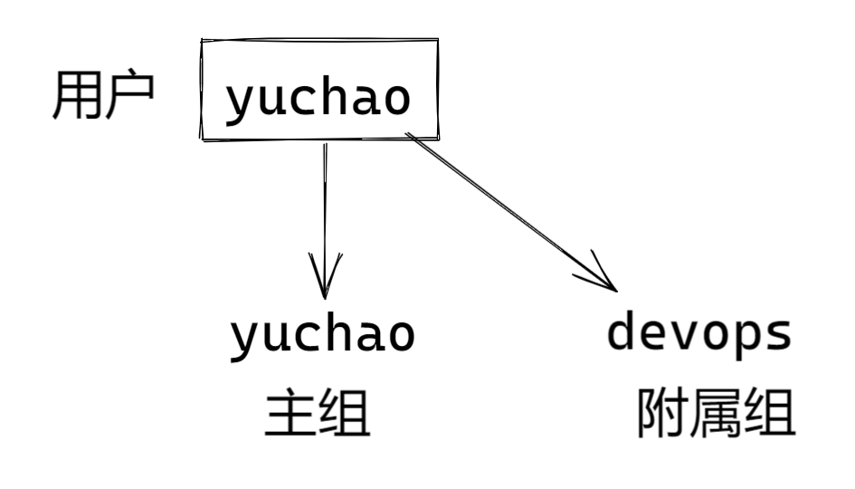
groupmod组修改
语法 modify
groupmod 参数 组名
-g gid缩写，可设置组ID
-n name缩写，可设置组名
案例：将devops组信息改了。
1.修改组名
2.修改组的ID号
[root@yuanlai-0224 ~]# groupmod -g 1005 -n opsgroup devops
[root@yuanlai-0224 ~]#
[root@yuanlai-0224 ~]# tail -5 /etc/group
yuchao01:x:1000:
zhiwei01:x:1001:
zhiwei001:x:1002:
fjh01:x:1003:
opsgroup:x:1005:
后续再添加新的组，id依然会继续累加。
groupdel组删除
语法
groupdel 祖名
案例
[root@localhost opt]# groupdel opschao
[root@localhost opt]#
[root@localhost opt]# tail -5 /etc/group
slocate:x:21:
postdrop:x:90:
postfix:x:89:
tcpdump:x:72:
yuchao:x:1000:
用户管理
关于用户的添加，删除，修改。
且用户信息和系统上的文件对应。
/etc/passwd
useradd添加用户
作用：给系统添加一个用户账户。
语法
useradd [选项 选项值] ... 用户名
选项
-g：表示指定用户的用户主（主要）组，选项值可以是用户组ID，也可以是组名
-G：表示指定用户的用户附加（额外）组，选项值可以是用户组ID，也可以是组名
u ：uid，用户的id（用户的标识符），系统默认会从500 /或1000之后按顺序分配uid，如果不想使用系统分配的，可以通过该选项自定义【类似于腾讯QQ 的自选靓号情况】
c：comment，添加注释（选择是否添加）
-s：指定用户登入后所使用的shell 解释器，默认/bin/bash【专门的接待员】，如果不想让其登录，则可以设置为/sbin/nologin （重要）
d：指定用户登入时的启始目录（家目录位置）
-n：取消建立以用户名称为名的群组（了解）
useradd新建用户时，系统会自动创建一个同名组。
案例
案例
# 不带任何参数，创建用户chaoge
[root@localhost opt]# useradd chaoge
用户创建过程
1）在 /etc/passwd 文件中创建一行关于chaoge用户的数据
2）在 /etc/shadow 文件中新增了一行关于chaoge密码的数据
3）在 /etc/group 文件中创建一行与用户名相同的组，例如chaoge
4）在 /etc/gshadow 文件中新增一行与新增群组相关的密码信息，例如chaoge
5）自动创建用户的家目录，默认在/home下，与用户名同名，如/home/chaoge
验证chaoge的创建
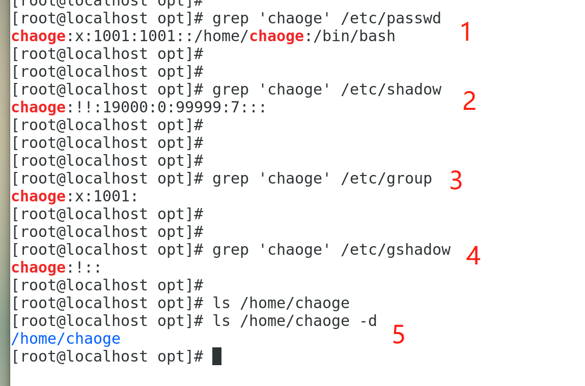
/etc/passwd文件解析
这五个步骤里，passwd文件是重点要关注的
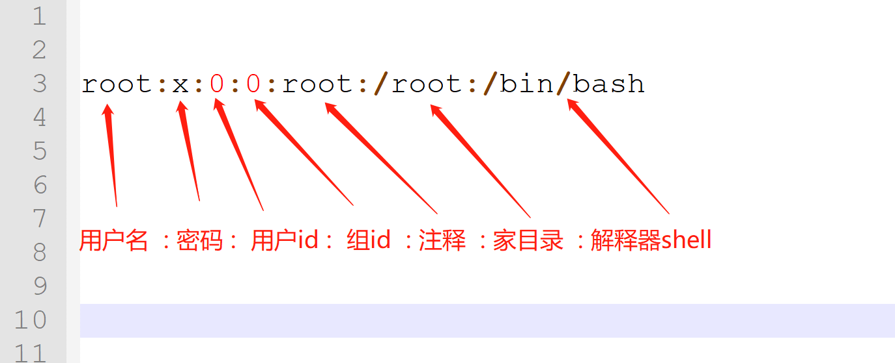
用户名：登录linux时使用的用户名
密码：此密码位置一般情况都是"x"，表示密码的占位，真实密码存储在/etc/shadow，做了加密处理。
用户ID：用户的识别符，每个用户都有唯一的UID【-u】
用户组ID：该用户所属的主组ID；【-g】（可以通过-g修改主组）
注释：解释该用户是做什么用的；【-c】
家目录：用户登录进入系统之后默认的位置；【-d】
解释器shell：等待用户进入系统之后，用户输入指令之后，该解释器会收集用户输入的指令，转换成机器语言，传递给内核处理；
如果解释器是==/bin/bash 表示用户可以登录到系统==，==/sbin/nologin表示该用户不能登录到系统==【-s】
真实用法（重要）
需求：某游戏公司，缺一个运维岗，合适的候选人yuchao入职后，加入运维部门opslinux，用户ID是9657，允许登录服务器。
用法，先想语法
useradd -G 附属组 -u 用户ID -s 解释器 -c "注释" 用户名
解决思路，命令怎么敲，分析需求：
- 用户名 yuchao
- 运维部门opslinux
- 用户id是9657
- 允许登录，解释器是/bin/bash
尝试敲打命令，或许不会一次就正确，这是太正常了，人生不就是在错误N次后，才得到真理么。
[root@localhost opt]# useradd -G opslinux -u 9657 -s /bin/bash -c "user yuchao" yuchao
useradd: group 'opslinux' does not exist
[root@localhost opt]#
[root@localhost opt]# useradd -G opslinux -u 9657 -s /bin/bash -c "user yuchao" yuchao
useradd: user 'yuchao' already exists
学会看报错（重要）
1.错误信息useradd: group 'opslinux' does not exist
该组不存在
2.错误信息，useradd: user 'yuchao' already exists
用户已存在了
1.删除即可
userdel -r yuchao
2.或者你不该删除，公司有同名的 于超，宇超，是不是也可能？名字后加个数字即可。
yuchao1
yuchao2
答案
[root@localhost opt]# useradd -G opslinux -u 9657 -s /sbin/nologin -c "user yuchao2" yuchao2
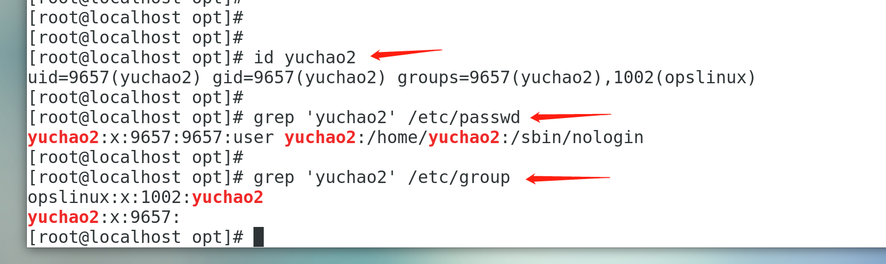
解释
- id命令可以查看用户信息
- 可见yuchao2有一个附加组1002，名字是opslinux
- /etc/passwd 查看yuchao2的具体信息
- /etc/group查看yuchao2组的信息
关于组的解释
yuchao2组，有一个9657的用户
opslinux组，组id是1002，并且组内有一个yuchao2用户
用户可以属于多个组，有多个附加组，语法就是
useradd -G opslinux,devlinux,testlinux -u 9657 -s /sbin/nologin -c "user yuchao2" yuchao2
id命令查看用户信息
命令：id
作用：查看一个用户的一些基本信息（包含用户id，用户组id，附加组id…），该指令如果不指定用户则默认当前用户。
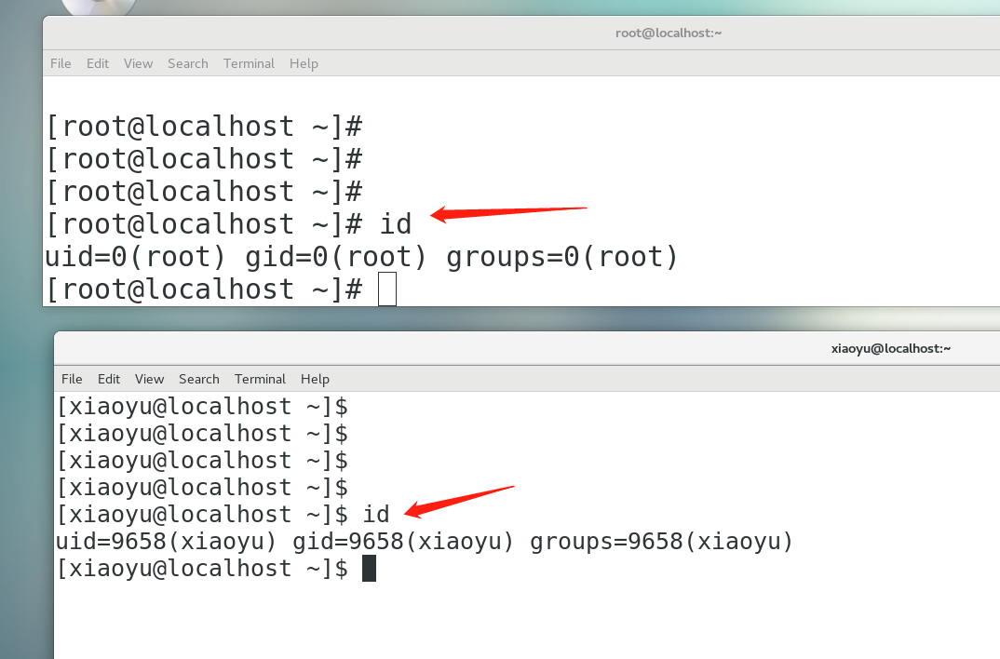
指定查看用户信息
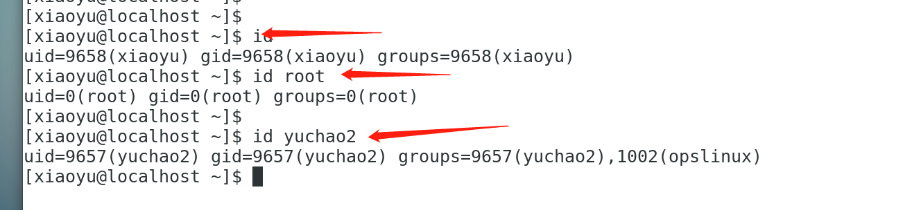
如何验证id命令看到的信息是否正常？
最正确就是看配置文件，用户信息都在/etc/passwd
id命令参数
id命令用于检查用户和组以及对应的UID，GID等信息
[root@pylinux ~]# id yu
uid=1000(yu) gid=1000(yu) 组=1000(yu)
[root@pylinux ~]# id -u yu #显示用户id
1000
[root@pylinux ~]# id -g yu #显示组id
1000
[root@pylinux ~]# id -un yu #显示用户名
yu
[root@pylinux ~]# id -gn yu #显示组名
yu
usermod修改用户信息
修改用户资料是很正常的事，比如我们也会经常修改自己的个性签名，修改自己的头像。
linux用户信息也一样可以改，当然修改了用户信息，影响的是该用户在linux服务器上的权限。
只能修改未登录的用户信息
命令：usermod(user modify)
语法：# usermod [选项 选项的值] … 用户名
作用：修改用户的各种属性
选项：
-g：表示指定用户的用户主组，选项的值可以是用户组的ID，也可以是组名
-G：表示指定用户的用户附加组，选项的值可以是用户组的ID，也可以是组名
-u：uid，用户的id（用户的标识符），系统默认会从500 之后按顺序分配uid，如果不想使用系统分配的，可以通过该选项自定义【类似于腾讯QQ 的自选靓号情况】
-L：锁定用户，锁定后用户无法登陆系统lock
-U：解锁用户unlock
-c<备注>：修改用户帐号的备注文字
-d<登入目录>：修改用户登入时的目录
-s<shell>：修改用户登入后所使用的shell
用户管理案例
# 创建yuchao3
useradd -G opslinux -u 5000 -s /bin/bash -c "user yuchao3" yuchao3
# 设置密码，用于登录
passwd yuchao3
超哥的游戏公司，员工yuchao3，属于opslinux组，但是yuchao3申请年假10天，要去三亚度假，因此要禁止yuchao3的登录权限。
并且要让xiaoyu用户接手yuchao3的工作，需要加入opslinux组，获取对应权限。
分析需求，思考命令怎么用
1.禁止yuchao3登录
2.修改xiaoyu用户加入opslinux组，以及注释。
答案
# 上锁，禁止登录
usermod -L yuchao3
# 解锁 unlock
usermod -U yuchao3
禁止登录
的确无法登录
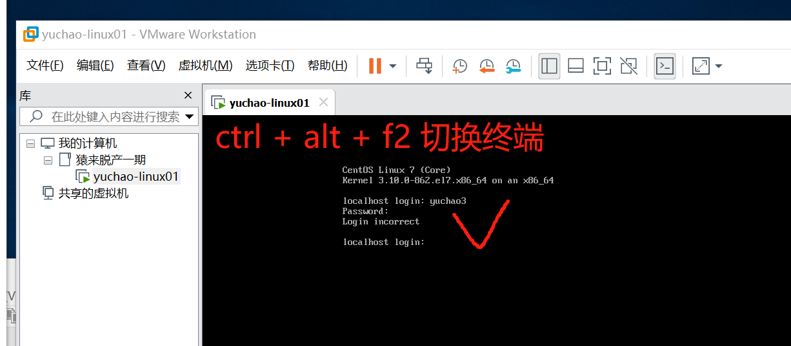
解锁用户yuchao3
[root@localhost ~]# usermod -L yuchao3
[root@localhost ~]# usermod -U yuchao3
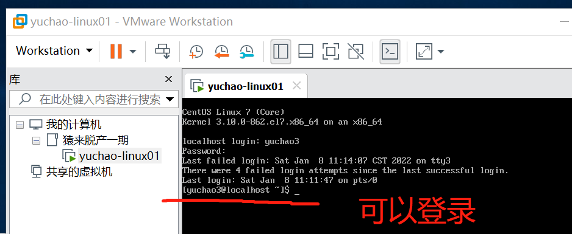
修改xiaoyu用户属性，加入opslinux组，获得运维组的权限。
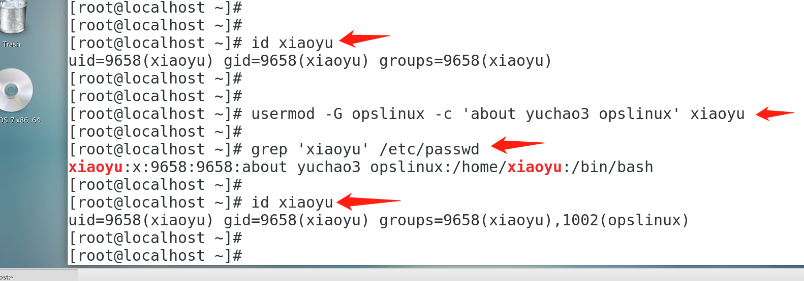
查看组
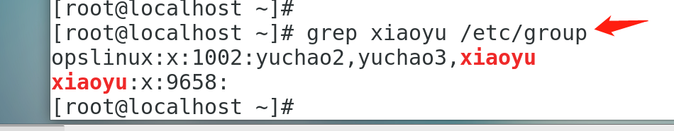
passwd修改密码
linux创建的用户必须有密码，才可以登录系统，否则无法登录。
语法
passwd 用户名
若不加用户名，默认操作当前登录的用户。
密码若是太简单，系统会给你些告警，工作里的密码是有复杂度的。
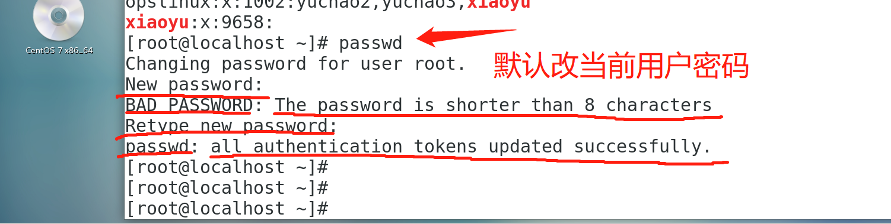
改他人密码
注意root可以改其他人密码，因为他是管理员，是老大。
xiaoyu可以改yuchao3的密码吗？你算老几。。凭什么。。
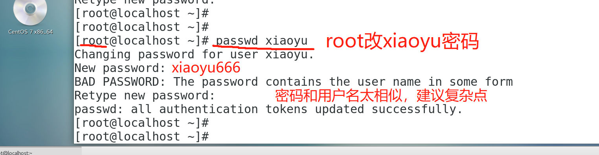
权限不够
passwd:只有root可以指定一个用户名。
标准输入密码
[root@yuanlai-0224 ~]# echo '123456' | passwd --stdin yuchao2
Changing password for user yuchao2.
passwd: all authentication tokens updated successfully.
/etc/shadow文件
[xiaoyu@localhost ~]$ ll /etc/passwd /etc/shadow
-rw-r--r-- 1 root root 2478 Jan 8 11:17 /etc/passwd
---------- 1 root root 1451 Jan 8 11:24 /etc/shadow
查看文件权限可知，linux默认允许/etc/passwd文件是所有人都可读的，很容易造成数据泄露，linux特意将密码单独拆成了/etc/shadow文件，且该文件所有人没有任何权限操作（root除外）。
useradd流程
1.用户添加，用户id，组id会递增
useradd cc1
2.检查/etc/passwd
[root@localhost ~]# grep 'cc1' /etc/passwd
cc1:x:9659:9659::/home/cc1:/bin/bash
3.检查group
[root@localhost ~]# grep 'cc1' /etc/group
cc1:x:9659:
4.检查密码文件
[root@localhost ~]# grep 'cc1' /etc/shadow
cc1:!!:19000:0:99999:7:::
默认是没有密码的
passwd流程
给用户设置密码后，自动在/etc/shadow文件中更新，且密码是加密显示的。
# 一次性查找3个文件
# 密码已经写入了文件
[root@localhost ~]# grep cc1 /etc/passwd /etc/group /etc/shadow
/etc/passwd:cc1:x:9659:9659::/home/cc1:/bin/bash
/etc/group:cc1:x:9659:
/etc/shadow:cc1:$6$vCRZejnq$tltuM.t1GNqJys0LuT.XmNP7gzR5CiY.qEYHyCfRh.mkLsHHOLWtC.bagWr/EaRd.IJQMsM7zMsd3HPYiQ2t40:19000:0:99999:7:::
如果密码显示是俩感叹号，表示空密码
chaoge:!!:19000:0:99999:7:::
yuchao2:!!:19000:0:99999:7:::
xiaoyu:$6$zVDwzrCs$TugaM6bsFwif1g/N7e5jnFybwyUjimaxOUErJYCZcLXbqysKNwJNnNEFZkUqNyiEw8MhJ7l96fCWzzJINt/2/0:19000:0:99999:7:::
yuchao3:$6$4r2o0pKP$ziZZ6pu7CekTVSJVKfKPOkyKUfwHMnaulPjM9SEba6ALP1WbssTt48ommeYh9PEidgkPeug/SHGjnNB1MVHJx1:19000:0:99999:7:::
cc1:$6$vCRZejnq$tltuM.t1GNqJys0LuT.XmNP7gzR5CiY.qEYHyCfRh.mkLsHHOLWtC.bagWr/EaRd.IJQMsM7zMsd3HPYiQ2t40:19000:0:99999:7:::
userdel删除用户
建议注释/etc/passwd用户信息而非直接删除用户
删除用户，以及删除用户家目录。
参数
语法
userdel(选项)(参数)
选项
-f：强制删除用户，即使用户当前已登录；
-r：删除用户的同时，删除与用户相关的所有文件。
例如
userdel oldyu # 保留家目录
userdel -rf oldchao # 强制删除用户与其家目录
# 查看/home目录，普通用户被统一放在这里管理，用户的个人配置文件等。
[root@localhost ~]# ls /home/
cc1 cc2 chaoge xiaoyu yu1.txt yuchao2 yuchao3
# 删除普通用户yuchao2
userdel yuchao2
有可能出现如下错误，因为该用户可能正在被使用中。
[root@localhost ~]# userdel yuchao2
userdel: user yuchao2 is currently used by process 11676
1.意思是该用户正在被进程11676使用。
2.停止该进程，该用户也就没人再用了
查看该进程是谁
[root@localhost ~]# ps -ef|grep 11676
yuchao2 11676 1 0 15:00 ? 00:00:00 /usr/bin/gnome-keyring-daemon --daemonize --login
root 13323 13048 0 15:15 pts/0 00:00:00 grep --color=auto 11676
# 杀掉这个进程
kill 11676
3.再次删除该用户，。注意该方式是不对的，得连带家目录一起干掉
[root@localhost ~]#
[root@localhost ~]# userdel yuchao2
[root@localhost ~]# ls /home/yuchao2 -d
/home/yuchao2
[root@localhost ~]# cd /home/
[root@localhost home]# ls
cc1 cc2 chaoge xiaoyu yu1.txt yuchao2 yuchao3
[root@localhost home]# rm -rf yuchao2
4.正确删除姿势
[root@localhost home]#
[root@localhost home]# userdel -r cc2
[root@localhost home]# ls -d /home/cc2
ls: cannot access /home/cc2: No such file or directory
5.用户信息文件里的数据也会被删除
[root@localhost home]# grep 'cc2' /etc/passwd /etc/group /etc/shadow
所以删除用户，删除了什么
- 配置文件里的账户信息
- /home下家目录
whoami、who、w、last、lastlog
whoami显示可用于查看当前登录的用户，我是谁
[root@pylinux ~]# whoami
root
w命令显示当前以登录的用户
[root@pylinux ~]# w
04:15:01 up 15 days, 18:03, 1 user, load average: 0.00, 0.01, 0.05
USER TTY FROM LOGIN@ IDLE JCPU PCPU WHAT
root pts/0 122.71.x5.xx 04:05 5.00s 0.07s 0.00s w
1.显示当前系统时间、系统从启动到运行的时间、系统运行中的用户数量和平均负载（1、5、15分钟平均负载）
2.第二行信息
user：用户名
tty:用户使用的终端号
from：表示用户从哪来，远程主机的ip信息
login：用户登录的时间和日期
IDLE：显示终端空闲时间
JCPU：该终端所有进程以及子进程使用系统的总时间
PCPU：活动进程使用的系统时间
WHAT：用户执行的进程名称
who
[root@pylinux ~]# who
root pts/0 2018-07-12 04:05 (122.71.x5.xx)
名称 用户终端 用户登录的系统时间 从哪来的机器ip
last、lastlog命令查看用户详细的登录信息
案例
#last命令显示已登录的用户列表和登录时间
[root@pylinux ~]# last
root pts/0 122.71.x5.xx Thu Jul 12 04:05 still logged in
root pts/0 122.71.x5.xx Thu Jul 12 04:02 - 04:05 (00:02)
root pts/1 122.71.x5.xx Wed Jul 11 16:56 - 16:57 (00:00)
wtmp begins Sun Jul 8 06:23:25 2018
lastlog命令显示当前机器所有用户最近的登录信息
last读取的是如下文件信息，二进制加密数据。
[root@yuanlai-0224 ~]# ll /var/log/wtmp
-rw-rw-r--. 1 root utmp 170112 Mar 12 15:16 /var/log/wtmp
[root@pylinux ~]# lastlog
用户名 端口 来自 最后登陆时间
root pts/0 122.71.65.73 四 7月 12 04:05:09 +0800 2018
bin **从未登录过**
yu pts/0 四 7月 12 04:05:51 +0800 2018
epmd **从未登录过**
rabbitmq 日 9月 29 03:42:01 +0800 2019
py pts/0 四 7月 12 04:06:02 +0800 2018
testyu **从未登录过**
Linux用户身份切换命令
su命令
linux中用户登录后，可以切换角色，比如yuchao用户切换到chaoge用户。
工作里一般不会直接使用root登录，而是大家都用普通账号，保护服务器安全，降低误操作，因为你普通用户权限低。
当你需要执行高权限的操作，你得使用root账号了，可以进行角色切换。
语法
su - 用户名
su root
su - root
su yuchao666
su - yuchao666
是否有横线的区别
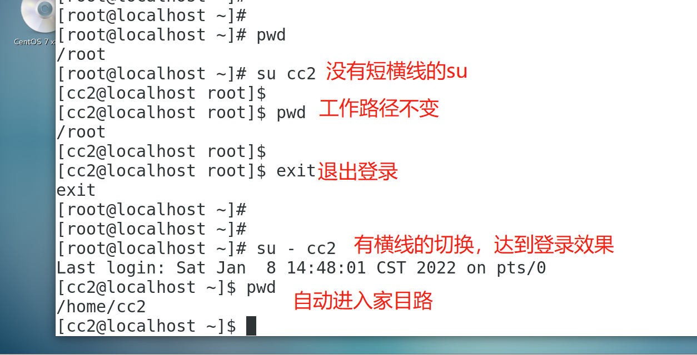
关于su是否加短横线
工作里会见到有的人用su不加横线，其实是不合适的，看一下正确玩法，解释：
# 1. 用普通用户yuchao2登录linux
# 2. 查看yuchao2的环境变量PATH，（PATH变量的作用是让你使用linux命令更轻松，省心）
# 3.因此su - 用户 表示完全意义的用户切换，角色切换+环境变量切换，应该添加上横线。
# 4.root可以随意切换普通用户，反之不可以
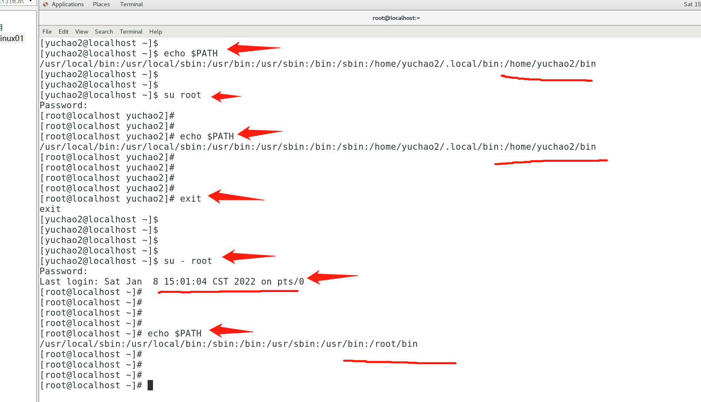
通过环境变量查看
su不加横线
当前用户的一些环境变量
[root@yuanlai-0224 ~]# env |grep -E "USER|MAIL|PWD|LOGNAME"
USER=root
MAIL=/var/spool/mail/root
PWD=/root
LOGNAME=root
su切换
[yuchao01@yuanlai-0224 root]$
[yuchao01@yuanlai-0224 root]$ env |grep -E "USER|MAIL|PWD|LOGNAME"
USER=yuchao01
MAIL=/var/spool/mail/root
PWD=/root
LOGNAME=yuchao01
[yuchao01@yuanlai-0224 root]$
su加短横线
实现了完全的用户切换，环境变量也都切换了，属于真正的用户切换了。
[root@yuanlai-0224 ~]# env |grep -E "USER|MAIL|PWD|LOGNAME"
USER=root
MAIL=/var/spool/mail/root
PWD=/root
LOGNAME=root
[root@yuanlai-0224 ~]#
[yuchao01@yuanlai-0224 ~]$ env |grep -E "USER|MAIL|PWD|LOGNAME"
USER=yuchao01
MAIL=/var/spool/mail/yuchao01
PWD=/home/yuchao01
LOGNAME=yuchao01
[yuchao01@yuanlai-0224 ~]$
[yuchao01@yuanlai-0224 ~]$ exit
logout
[root@yuanlai-0224 ~]#
sudo命令
sudo命令用来以其他身份来执行命令，预设的身份为root。在
/etc/sudoers中设置了可执行sudo指令的用户。作用是让普通用户不需要root密码即可用root权限执行命令。
- 用户提权，提升为root身份去执行命令。
语法
sudo(选项)(参数)
选项
-b：在后台执行指令；
-h：显示帮助；
-H：将HOME环境变量设为新身份的HOME环境变量；
-k：结束密码的有效期限，也就是下次再执行sudo时便需要输入密码；。
-l：列出目前用户可执行与无法执行的指令；
-p：改变询问密码的提示符号；
-s<shell>：执行指定的shell；
-u<用户>：以指定的用户作为新的身份。若不加上此参数，则预设以root作为新的身份；
-v：延长密码有效期限5分钟；
-V ：显示版本信息。
当切换到普通用户后，权限是比较低的。
[root@yuanlai-0224 ~]# su - yuchao01
Last login: Wed Mar 9 20:02:39 CST 2022 on pts/0
[yuchao01@yuanlai-0224 ~]$
[yuchao01@yuanlai-0224 ~]$
[yuchao01@yuanlai-0224 ~]$ ll /opt
total 0
-rw-r--r-- 1 root root 0 Mar 9 18:26 三里屯美女微信.txt
[yuchao01@yuanlai-0224 ~]$
[yuchao01@yuanlai-0224 ~]$
[yuchao01@yuanlai-0224 ~]$ echo "大爷来玩呀" > /opt/三里屯美女微信.txt
-bash: /opt/三里屯美女微信.txt: Permission denied
尝试使用尚方宝剑，sudo
[yuchao01@yuanlai-0224 ~]$ sudo echo "大爷来玩呀" > /opt/三里屯美女微信.txt
-bash: /opt/三里屯美女微信.txt: Permission denied
普通用户，偷摸看看老板的办公室
[yuchao01@yuanlai-0224 ~]$ sudo ls /root
We trust you have received the usual lecture from the local System
Administrator. It usually boils down to these three things:
#1) Respect the privacy of others.
#2) Think before you type.
#3) With great power comes great responsibility.
[sudo] password for yuchao01:
yuchao01 is not in the sudoers file. This incident will be reported.
[yuchao01@yuanlai-0224 ~]$
最后一行，告诉你，你yuchao01不在这个sudoers files文件里，操作不允许。
visudo命令
- 你可以选择自己去vim编辑sudo配置文件，但是vim不会给你提供语法检测功能，写错了也不知道。
[root@yuanlai-0224 ~]# vim /etc/sudoers
89 ## The COMMANDS section may have other options added to it.
90 ##
91 ## Allow root to run any commands anywhere
92 root ALL=(ALL) ALL
- 使用visudo命令，提供了语法检测功能。
visudo用于编辑/etc/sudoers文件，且提供语法检测，用于配置sudo命令
给yuchao01用户配置sudo使用权
1.直接输入visudo命令，相当于打开vim /etc/sudoers
找到如下行
89 ## The COMMANDS section may have other options added to it.
90 ##
91 ## Allow root to run any commands anywhere
92 root ALL=(ALL) ALL
2.添加你想让执行sudo命令的用户
89 ## The COMMANDS section may have other options added to it.
90 ##
91 ## Allow root to run any commands anywhere
92 root ALL=(ALL) ALL
93 yuchao01 ALL=(ALL) ALL
3.保存退出，使用vim/vi的模式，此时已经可以用yuchao01用户，使用sudo命令了
切换普通用户
[root@yuanlai-0224 ~]# su - yuchao01
Last login: Wed Mar 9 20:07:26 CST 2022 on pts/0
[yuchao01@yuanlai-0224 ~]$
用sudo提权，修改文件内容
[yuchao01@yuanlai-0224 ~]$ sudo vim /opt/三里屯美女微信.txt
[yuchao01@yuanlai-0224 ~]$
[yuchao01@yuanlai-0224 ~]$ cat /opt/三里屯美女微信.txt
美女微信 54321
用sudo提权，修改其他用户的密码
[yuchao01@yuanlai-0224 ~]$ passwd caixukun
passwd: Only root can specify a user name.
[yuchao01@yuanlai-0224 ~]$
[yuchao01@yuanlai-0224 ~]$ sudo passwd caixukun
Changing password for user caixukun.
New password:
BAD PASSWORD: The password is a palindrome
Retype new password:
passwd: all authentication tokens updated successfully.
[yuchao01@yuanlai-0224 ~]$
降低sudo权限
1.编辑visudo
修改权限，只允许执行mkdir，useradd
## Allow root to run any commands anywhere
root ALL=(ALL) ALL
yuchao01 ALL=(ALL) /usr/bin/mkdir,/usr/sbin/useradd
2.再次使用sudo，尝试使用vim，权限不够了，不让用
[yuchao01@yuanlai-0224 ~]$ sudo vim /opt/三里屯美女微信.txt
[sudo] password for yuchao01:
Sorry, user yuchao01 is not allowed to execute '/bin/vim /opt/三里屯美女微信.txt' as root on yuanlai-0224.
3.使用mkdir是可以的
[yuchao01@yuanlai-0224 opt]$ mkdir yuchao到此一游
mkdir: cannot create directory ‘yuchao到此一游’: Permission denied
[yuchao01@yuanlai-0224 opt]$
[yuchao01@yuanlai-0224 opt]$ sudo mkdir yuchao到此一游
[yuchao01@yuanlai-0224 opt]$ ll
total 4
drwxr-xr-x 2 root root 6 Mar 9 20:29 yuchao到此一游
-rw-r--r-- 1 root root 19 Mar 9 20:21 三里屯美女微信.txt
[yuchao01@yuanlai-0224 opt]$
4.使用useradd是可以的
[yuchao01@yuanlai-0224 opt]$ id caixukun01
uid=1011(caixukun01) gid=1011(caixukun01) groups=1011(caixukun01)
[yuchao01@yuanlai-0224 opt]$
删除用户命令如何添加上？
[yuchao01@yuanlai-0224 opt]$ sudo userdel caixukun01
Sorry, user yuchao01 is not allowed to execute '/sbin/userdel caixukun01' as root on yuanlai-0224.
最后，一般给用户sudo权限的话，也是默许该用户可以用root身份去执行命令了，除非特殊场景，规矩特别多，会作这样的命令限制。
切换到root用户
1.命令1
su - root # 输入root密码
2.命令2
su - # 输入root密码
3.命令3
sudo su - # 以root身份执行su -，要求该用户在sudoers文件里
图解sudo过程
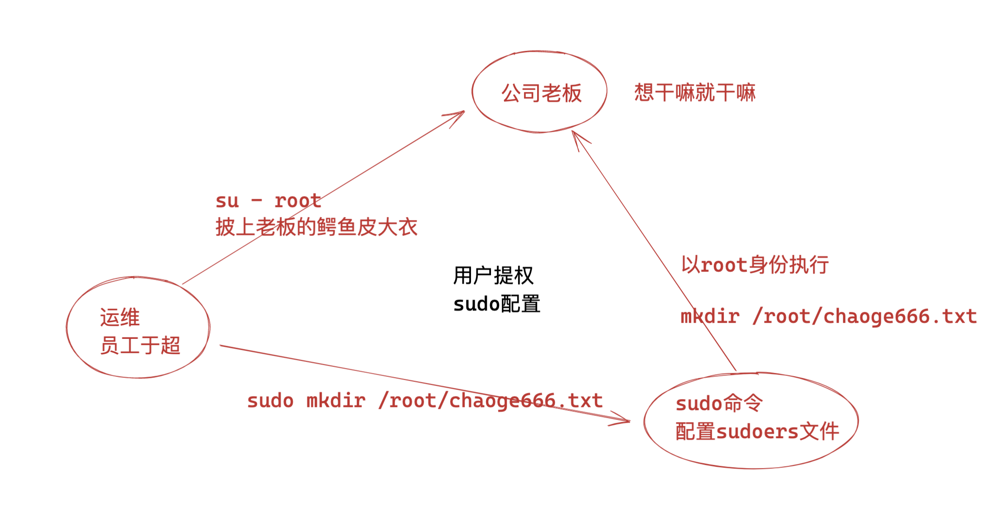
关于sudo和重定向的坑
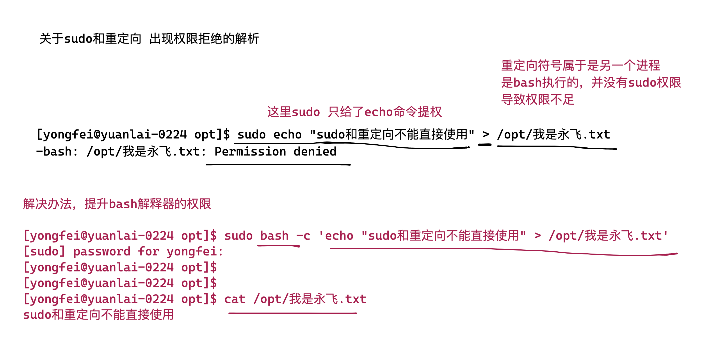
用户管理命令补充
- 账号过期，
usermod -e - 密码过期，
chage -M
usermod修改账号过期
usermod命令用于修改用户账号 。usermod可用来修改用户账号的各项设定，修改系统账号文件来反映通过命令行指定的变化。
语法格式：usermod [参数]
常用参数：
| -c<备注> | 修改用户账号的备注文字 |
|---|---|
| -d<登入目录> | 修改用户登入时的目录 |
| -e<有效期限> | 修改账号的有效期限 |
| -f<缓冲天数> | 修改在密码过期后多少天即关闭该账号 |
| -g<群组> | 修改用户所属的群组 |
| -G<群组> | 修改用户所属的附加群组 |
| -l<账号名称> | 修改用户账号名称 |
| -L | 锁定用户密码，使密码无效 |
| -s |
修改用户登入后所使用的shell |
| -u |
修改用户ID |
| -U | 解除密码锁定 |
chage设置密码过期
chage命令是用来修改帐号和密码的有效期限；这个信息由系统用于确定用户何时必须更改其密码。
语法格式：chage [参数]
常用参数：
| -M | 密码保持有效的最大天数 |
|---|---|
| -W | 用户密码到期前，提前收到警告信息的天数 |
| -E | 帐号到期的日期，会禁止此帐号，也可以修改账号的过期时间。0表示立即过期，-1从不过期 |
| -d | 设置密码什么时候过期！-1 从不过期 0 立即过期 |
| -l | 列出当前用户的密码过期设置。普通用户仅可以查看自己的密码过期时间。 |
参考实例
使用-l参数列出用户密码过期的设置：
chage -l root
使用-M参数设置redis用户的密码最大有效期为100天：
chage -M 100 redis
设置yuchao01用户的密码，到2022-3-14过期，3-15号登录必须改密码。
chage -d '2022-3-14' ycc01 # 密码能用到3-14号，3-15号必须得改密码
设置yuchao01用户过期时间为1年，并且限制下次登录，必须立即修改密码。
[root@yuanlai-0224 ~]# chage -E '2023-03-12' -d 0 ycc01
[root@yuanlai-0224 ~]# chage -l ycc01
最近一次密码修改时间 ：密码必须更改
密码过期时间 ：密码必须更改
密码失效时间 ：密码必须更改
帐户过期时间 ：3月 12, 2023
两次改变密码之间相距的最小天数 ：0
两次改变密码之间相距的最大天数 ：1
在密码过期之前警告的天数 ：7
gpasswd管理用户组
gpasswd命令是Linux下工作组文件/etc/group和/etc/gshadow的管理工具
语法格式：gpasswd [参数]
常用参数：
| -a | 添加用户到组 |
|---|---|
| -d | 从组删除用户 |
| -A | 指定管理员 |
| -M | 指定组成员和-A的用途差不多 |
| -r | 删除密码 |
| -R | 限制用户登入组，只有组中的成员才可以用newgrp加入该组 |
将ycc01用户，加入到opslinux组
你可以用usermod命令，也可以用这个命令，办法都很多
[root@yuanlai-0224 ~]# gpasswd -a ycc01 opslinux
正在将用户“ycc01”加入到“opslinux”组中
[root@yuanlai-0224 ~]#
查看配置文件
[root@yuanlai-0224 ~]# grep opslinux /etc/group
opslinux:x:3002:ycc01
[root@yuanlai-0224 ~]# id ycc01
uid=1700(ycc01) gid=1700(cc01) 组=1700(cc01),3002(opslinux)
将ycc01，从opslinux组里删除
[root@yuanlai-0224 ~]# gpasswd -d ycc01 opslinux
正在将用户“ycc01”从“opslinux”组中删除
[root@yuanlai-0224 ~]#
[root@yuanlai-0224 ~]# id ycc01
uid=1700(ycc01) gid=1700(cc01) 组=1700(cc01)
cut命令
cut在文件的每一行中提取片断
在每个文件的各行中, 把提取的片断显示在标准输出。
若不指定file参数，该命令将读取标准输入。 必须指定 -b、-c 或 -f 标志之一。
语法格式：cut [参数] [文件]
常用参数：
| -b | 以字节为单位进行分割 ,仅显示行中指定直接范围的内容 -b '范围' |
|---|---|
| -c | 以字符为单位进行分割 , 仅显示行中指定范围的字符 |
| -d | 自定义分隔符，默认为制表符”TAB” |
| -f | 显示指定字段的内容 , 与-d一起使用 |
| -n | 取消分割多字节字符 |
| --complement | 补足被选择的字节、字符或字段 |
| --out-delimiter | 指定输出内容是的字段分割符 |
cut案例
# 1.以字节为单位切割，显示第四个字节内容
[root@yuanlai-0224 ~]# cat cut.txt |cut -b 4
n
# 2.截取出 yuchao名字（英文状态，1字符等于1字节）
[root@yuanlai-0224 ~]# cat cut.txt
My name is yuchao and i love linux!
[root@yuanlai-0224 ~]# cat cut.txt |cut -b 12-17
yuchao
[root@yuanlai-0224 ~]# cat cut.txt |cut -c 12-17
yuchao
# 3.中文提取，1中文等于3字节，-b参数
[root@yuanlai-0224 ~]# echo '于超牛啊' | cut -b 1-3
于
[root@yuanlai-0224 ~]# echo '于超牛啊' | cut -b 4-7
超�
[root@yuanlai-0224 ~]# echo '于超牛啊' | cut -b 4-6
超
[root@yuanlai-0224 ~]# echo '于超牛啊' | cut -b 7-9
牛
[root@yuanlai-0224 ~]# echo '于超牛啊' | cut -b 10-12
啊
# 4.中文提取，按字符提取，1一个中文，当做1个字符处理了 -c参数
[root@yuanlai-0224 ~]# echo '于超牛啊' | cut -c 1-3
于超牛
[root@yuanlai-0224 ~]# echo '于超牛啊' | cut -c 1-2
于超
[root@yuanlai-0224 ~]# echo '于超牛啊' | cut -c 1-4
于超牛啊
[root@yuanlai-0224 ~]# echo '于超牛啊' | cut -c 1-5
于超牛啊
[root@yuanlai-0224 ~]# echo '于超牛啊' | cut -c 4
啊
# 5.-f 显示指定字段的内容，和-d 指定分隔符结合使用。
[root@yuanlai-0224 ~]# tail -5 /etc/passwd |cut -d ':' -f 2
x
x
x
x
x
[root@yuanlai-0224 ~]# tail -5 /etc/passwd |cut -d ':' -f 3
1503
2001
3001
1700
1500
[root@yuanlai-0224 ~]# tail -5 /etc/passwd |cut -d ':' -f 1-3
giaogiao:x:1503
huangyan01:x:2001
yongfei:x:3001
ycc01:x:1700
yuanlai01:x:1500
# 6.批量删除系统普通用户
# 批量查询系统普通用户账号
[root@yuanlai-0224 ~]# for i in $(cat /etc/passwd|grep '/bin/bash'|grep -v 'root'|cut -d ':' -f 1);do echo $i;done
# 批量删除动作
[root@yuanlai-0224 ~]# for i in $(cat /etc/passwd|grep '/bin/bash'|grep -v 'root'|cut -d ':' -f 1);do userdel -rf $i;done
Linux设置中文
安装中文语言包
yum install kde-l10n-Chinese
yum reinstall glibc-common
写入配置文件
[root@yuchao-tx-server ~]# tail -2 /etc/profile
# by chinese
export LC_ALL="zh_CN.UTF-8"
改为英文
LC_ALL="en_US.UTF-8"